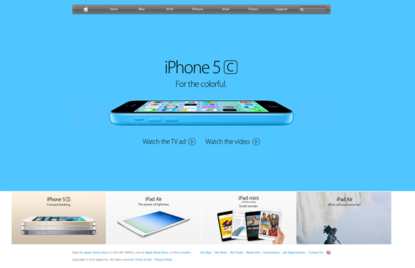
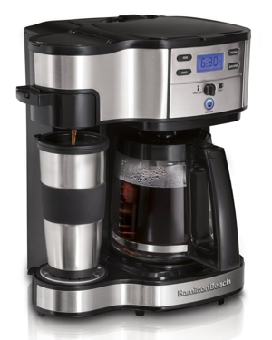
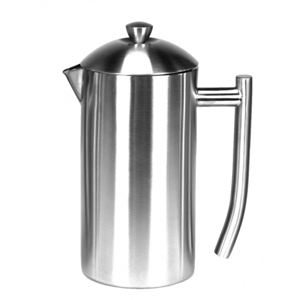
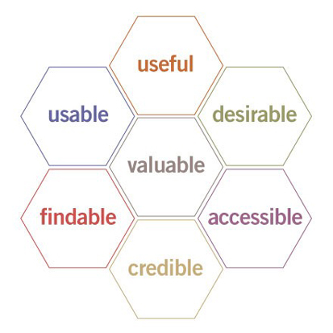

Intro to User Experience
Class 1
Intro to User Experience
Class 1
Welcome
Girl Develop It is here to provide affordable and accessible programs to learn software through mentorship and hands-on instruction.
Some "rules"
- We are here for you!
- Every question is important
- There are no dumb questions!
- Help each other
- Have fun!
Introduction
Girl Develop It Phoenix is here to help!

- Becky Sroufe, Sr. UI/UX Designer
- Twitter: @beckysroufe
- Email: becky@beckysroufe.com
Let's meet one another!
Tell us just a little bit about yourself:
- Who you are
- What you do
- What you hope to get from this class
- Your favorite breakfast food :)
What we'll cover today:
- Some definitions and history
- Exercise: Simplify
- The anatomy of a design
- Finding out who your users are
- Getting started with testing
- Designing a test
- Working with users
- Exercise: Conduct a brief test
1. What is User Experience?
User Experience is the way a person feels about using a product, system or service.
- Practice of using methods and techniques to research what users need to design products and services through them
- Used to describe the effect created by interactions and perceptions that someone has when using a product or service
What does a UX Designer do all day?
- Observe
- Consume vast quantities of sticky notes
- Create amazing whiteboard art
- Create pretty design mockups
- Bug people to play with things
- Observe
Some common themes
- Advocacy and education
- Finding problems, proposing actionable solutions
- Facilitating communication
A Bit of UX History
- 1900s: Making human labor more efficient
- 1948: Toyota valued a'respect for people' philosophy
- 1955: Henry Dreyfuss and 'Designing For People'
- 1970: Xerox PARC
Read more: Where UX Comes from by Leah Buley
“When the point of contact between the product and the people becomes a point of friction, then the industrial designer has failed. On the other hand, if people are made safer, more comfortable, more eager to purchase, more efficient - or just plain happier - by contact with the product, then the designer has succeeded.” - Henry Dreyfuss
Don Norman, the first UX Architect
- 1990s: Applie hired a cognitive scientist named Don Norman
- He was the first person to have the title UX Architect
- One of the godfathers of UX
- 1995: Don Norman coins term user experience to describe his team's work at Apple
- 2007: The iPhone puts user experience in limelight by delighting users

Apple products create awareness of design and UX
Why should we care about user experience?
- Think about an object you use every day
Pretty + functional = the holy grail.
Tying it back to websites
- Beautiful but not functional
- Functional but not beautiful
- Why not both?
2. Simplify: Exercise
3. The anatomy of a design
- Information Architecture
- Interaction Design
- Visual Design
A bit of theory
What is Information Architecture?
It functions as the skeletal structure to our experience - gives us the backbone on which we'll build the interface
- Navigation
- Breadcrumbs
- Sidebar menus
- Footer menus
- Headers and sections in content blocks
- User interface element placement (call-to-actions (CTA), buttons)
- Content hierarchy and flow
Example

What is Interaction Design?
- Clickable
- Scrollable
- Action words, like 'Submit'
- Typeable (inputs)
- Hover states
- Animations
Example
[ EXAMPLE HERE ]
Separating Visual Design
- Overall look and feel
- Pictures
- Colors
- Typography
4. Finding out who your users are
Before there can be design, there must be data.
What you need to know
- Demographics
- Technological capabilities
- Common contexts
Tools to try
5. Getting Started with testing
Just go for it!
The small test- any testing is better than none.
Pros
- Cheap
- Easy to get your feet wet
- Start to get high up buy-in
Cons
- Will by its nature be small in scope
- Will probably need more testing to be useful
The big test
Pros
- Get a wider range of input
- Get more in-depth feedback
- Authority
Cons
- More expensive
- Slow/time-consuming
- Less focused results are more
challenging to apply
Ongoing testing
Make it a habit, and you'll never have to do a giant test again!
6. Designing a Test
- Coming up with a testing plan
- Test styles
- Remote vs. in-person
- Tools to use
Users don't have the all answers, either.
Have a test plan
- Organize yourself
- Provide your tester something to react against
- Respect everyone's time
Example
Known Problem:
Non-intuituve browsing mechanism
Leading Question:
How would you search for the latest edition of the Wall Street Journal?
Naturalistic vs Task-oriented
- There is no one right way for every situation.
- Naturalistic- can be better for fishing for information in general.
- Task-focused- can be better for answering very specific questions.
In-person vs Remote
Types of tests
- In-person moderated- sitting with the user, interactive.
- In-person unmoderated- watching through a mirror, or recording and viewing later.
- Remote moderated- an interactive session via a tool like Skype.
- Remote unmoderated- using a tool like Open Hallway
7. Working with users
Rumor has it they're just people.
Recruiting
- Don't wait until you have a specific test to run, build up a list.
- Be social.
- Use your application/website.
Scheduling
- Leave extra time for fixing problems.
- Remember to eat lunch!
Legal Stuff
- Check with your organization or client's organization first.
- Even if they don't have an explicit policy, they might want to have a conversation.
Running a Session
- Be friendly and confident.
- Be mindful of language.
- No technobabble.
- No leading.
8. Exercise
Let's test something!